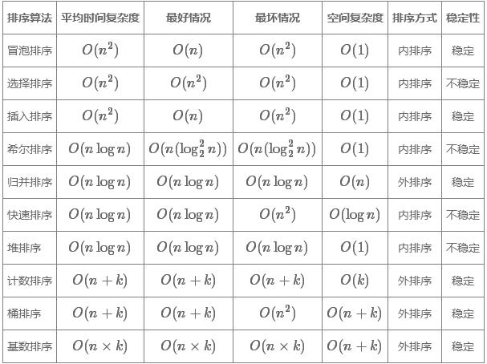
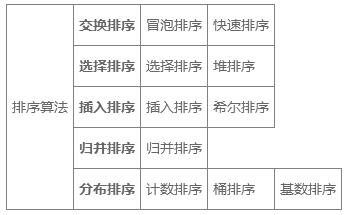

JS常用的排序算法有哪些，如何实现这些算法？
分享人：张雪飞
目录
1.背景介绍
2.知识剖析
3.常见问题
4.解决方案
5.编码实战
6.扩展思考
7.参考文献
8.更多讨论
1.背景介绍
什么是算法
算法（Algorithm）是指解题方案的准确而完整的描述，是一系列解决问题的清晰指令，算法代表着用系统的方法描述解决问题的策略机制。 也就是说，能够对一定规范的输入，在有限时间内获得所要求的输出。如果一个算法有缺陷，或不适合于某个问题，执行这个算法将不会解 决这个问题。不同的算法可能用不同的时间、空间或效率来完成同样的任务。一个算法的优劣可以用空间复杂度与时间复杂度来衡量。
2.知识剖析
算法的特点
1.有限性（Finiteness）：一个算法必须保证执行有限步之后结束。
2.确切性（Definiteness）： 一个算法的每一步骤必须有确切的定义。
3.输入（Input）：一个算法有零个或多个输入，以刻画运算对象的初始情况，所谓零个输入是指算法本身给定了初始条件。
4.输出（Output）：一个算法有一个或多个输出。没有输出的算法毫无意义。
5.可行性(Effectiveness)：算法中执行的任何计算步骤都是可以被分解为基本的可执行的操作步，即每个计算步都可以在有限时间内完成（也称之为有效性）。
3.常见问题
几种常见算法的写法及实现
4.解决方案
冒泡排序（Bubble Sort）
是重复地走访要排序的数列，一次比较两个元素，如果它们的顺序错误就把它们交换过来。 走访数列的工作是重复地进行直到没有再需要交换时，此时该数列已经排序完成。这个算法的名字由来是因为越小的元素会经由交换慢慢“浮”到数列的顶端。
思想：每一次对比相邻两个数据的大小，小的排在前面，如果前面的数据比后面的大就交换这两个数的位置
要实现上述规则需要用到两层for循环，外层从第一个数到倒数第二个数，内层从外层的后面一个数到最后一个数
特点：排序算法的基础。简单实用易于理解，缺点是比较次数多，效率较低。

- 具体算法描述如下：
- 比较相邻的元素。如果第一个比第二个大，就交换它们两个；
- 对每一对相邻元素作同样的工作，从开始第一对到结尾的最后一对，这样在最后的元素应该会是最大的数；
- 针对所有的元素重复以上的步骤，除了最后一个；
- 重复步骤 $1~3$，直到排序完成。
const bubbleSort = (arr) => {
let len = arr.length;
for(let i = 0;i < len;i++){
for(let j = 0;j < len - 1 - i;j++){
if(arr[j] > arr[j+1]){
let temp = arr[j+1];
arr[j+1] = arr[j]
arr[j] = temp;
}
}
}
return arr;
}
let arr = [3,44,38,5,47,15,36,26,27,2,46,4,19,50,48];
console.log(bubbleSort(arr)); //[2, 3, 4, 5, 15, 19, 26, 27, 36, 38, 44, 46, 47, 48, 50]
改进冒泡排序： 我们设置一个标志性变量 pos，用于记录每趟排序中最后一次进行交换的位置。由于 pos 位置之后的元素均已交换到位， 故在进行下一趟排序时只要扫描到 pos 位置即可。 这样的优化方式可以在最好情况下把复杂度降到 O(n)O(n)。
const bubbleSort2 = (arr) => {
let i = arr.length - 1;
while(i > 0){
let pos = 0;
for(let j = 0; j < i; j++){
if (arr[j] > arr[j+1]){
pos = j; //记录交换的位置
let tmp = arr[j];
arr[j] = arr[j+1];
arr[j+1] = tmp;
}
}
i = pos; //为下一趟排序作准备
}
return arr;
}
另外传统冒泡排序中每一趟排序操作只能找到一个最大值或最小值，我们可以考虑利用在每趟排序中进行正向和反向两遍冒泡的方法来一次 得到两个最终值(最大者和最小者)，从而继续优化使排序趟数几乎减少一半。（这就是鸡尾酒排序）
const cooktailSort = (arr) => {
let min = 0;
let max = arr.length - 1;
while(min < max){
for(let j = min;j < max;j++){
if(arr[j] > arr[j+1]){
let tmp = arr[j];
arr[j] = arr[j+1];
arr[j+1] = tmp;
}
}
-- max;
for(let j = max;j > min;j--){
if(arr[j] < arr[j-1]){
let tmp = arr[j]
arr[j] = arr[j-1];
arr[j-1] = tmp;
}
}
++ min;
}
return arr;
}
算法分析
冒泡排序对有n个元素的项目平均需要 O(n^2) 次比较次数，它可以原地排序，并且是能简单实现的几种排序算法之一，但是它对于少数元素之外 的数列排序是很没有效率的。
- 最佳情况： T(n) = O(n)
- 最差情况： T(n) = O(n^2)
- 平均情况： T(n) = O(n^2)
选择排序
算法原理：选择排序（Selection sort）是一种简单直观的排序算法。它的工作原理如下。首先在未排序序列中找到最小（大）元素，存放到排序序列的起始位置， 然后，再从剩余未排序元素中继续寻找最小（大）元素，然后放到已排序序列的末尾。以此类推，直到所有元素均排序完毕。

算法描述与实现,具体算法描述如下：
- 初始状态：无序区为 R[1 ... n]，有序区为空；
- 第 i 趟排序(i=1,2,3...n−1)开始时，当前有序区和无序区分别为 R[1...i−1] 和 R(i...n)。 该趟排序从当前无序区中选出关键字最小的记录 R[k]，将它与无序区的第 1 个记录 RR 交换，使 R[1...i]和 R[i+1...n] 分别变为记录个数增加 1 个的新有序区和记录个数减少 1 个的新无序区；
- n−1 趟结束后，数组有序化。
n个记录的直接选择排序可经过 n−1 趟直接选择排序得到有序结果。具体算法描述如下：
const SelectionSort = (arr) => {
let len = arr.length;
let minIndex, tmp;
console.time('选择排序耗时');
for (let i = 0;i < len - 1; i++){
minIndex = i;
for(let j = i + 1;j < len;j++){
if(arr[minIndex] > arr[j]){
minIndex = j;
}
}
tmp = arr[i];
arr[i] = arr[minIndex];
arr[minIndex] = tmp;
}
console.timeEnd('选择排序耗时');
return arr;
}
算法分析
选择排序的主要优点与数据移动有关。如果某个元素位于正确的最终位置上，则它不会被移动。选择排序每次交换一对元素， 它们当中至少有一个将被移到其最终位置上，因此对 nn 个元素的表进行排序总共进行至多 n−1n−1 次交换。在所有的完全依靠交换去移动元素的排 序方法中，选择排序属于非常好的一种。 但原地操作几乎是选择排序的唯一优点，当空间复杂度要求较高时，可以考虑选择排序； 实际适用的场合非常罕见。
- 最佳情况： T(n)=O(n2)T(n)=O(n2)
- 最差情况： T(n)=O(n2)T(n)=O(n2)
- 平均情况： T(n)=O(n2)
插入排序（Insertion Sort）
算法原理
插入排序（Insertion Sort）是一种简单直观的排序算法。它的工作原理是通过构建有序序列，对于未排序数据，在已排序序列中从后向前s扫描， 找到相应位置并插入。插入排序在实现上，通常采用 in-place 排序（即只需用到 O(1)O(1) 的额外空间的排序），因而在从后向前的扫描过程中， 需要反复把已排序元素逐步向后挪位，为最新元素提供插入空间

算法描述与实践
一般来说，插入排序都采用in-place在数组上实现。具体算法描述如下：
- 从第一个元素开始，该元素可以认为已经被排序
- 取出下一个元素，在已经排序的元素序列中从后向前扫描
- 如果该元素（已排序）大于新元素，将该元素移到下一位置
- 重复步骤 3，直到找到已排序的元素小于或者等于新元素的位置
- 将新元素插入到该位置后
- 重复步骤 2 5
const insertionSort = (arr) => {
let len = arr.length;
console.time('插入排序耗时');
for (let i = 1;i < len; i++){
let key = arr[i];
let j = i - 1;
while(j >= 0 && arr[j] > key){
arr[j+1] = arr[j];
j--;
}
arr[j+1] = key;
}
console.timeEnd('插入排序耗时');
return arr;
}
具体思路如下：
- 在插入第 i 个元素时，对前面的 0 i−1元素进行折半。
- 与前面的 0 i−1 个元素中间的元素进行比较，如果小，则对前半再进行折半，否则对后半进行折半。
- 直到 left > right，再把第 ii 个元素前 1 位和目标位置间的所有元素后移，把第 ii 个元素放在目标位置上。
快速排序
算法原理:通过一趟排序将待排记录分隔成独立的两部分，其中一部分记录的关键字均比另一部分的关键字小，则可分别对这两部分记录继续进行排序， 以达到整个序列有序。

算法描述与实现
具体算法描述如下：
-
快速排序使用分治法来把一个串（list）分为两个子串（sub-lists）。具体算法描述如下：
- 从数列中挑出一个元素，称为 “基准”（pivot）；
- 重新排序数列，所有元素比基准值小的摆放在基准前面，所有元素比基准值大的摆在基准的后面（相同的数可以到任一边）。 在这个分区退出之后，该基准就处于数列的中间位置。这个称为分区（partition）操作；
- 递归地（recursive）把小于基准值元素的子数列和大于基准值元素的子数列排序。
'use strict'
const quickSort = (arr) => {
if (arr.length <= 1) { return arr; }
let pivotIndex = Math.floor(arr.length / 2);
let pivot = arr.splice(pivotIndex, 1)[0];
let left = [];
let right = [];
for (let i = 0; i < arr.length; i++){
if (arr[i] < pivot) {
left.push(arr[i]);
} else {
right.push(arr[i]);
}
}
return quickSort(left).concat([pivot], quickSort(right));
};
let arr=[3,44,38,5,47,15,36,26,27,2,46,4,19,50,48];
console.time('快速排序耗时');
console.log(quickSort(arr));
console.timeEnd('快速排序耗时');
算法分析
- 最佳情况： T(n)=O(nlogn)T(n)=O(nlogn)
- 最差情况： T(n)=O(n2)T(n)=O(n2)
- 平均情况： T(n)=O(nlogn)
5.编码实战
6.扩展思考
1.排序的差异
2.算法优劣评价术语
1.排序的差异
快速排序是一种不稳定的排序算法，而归并排序是一种稳定的排序算法。由于不同引擎在算法选择上可能存在差异，导致前端如果依赖 Array.prototype.sort 接口实现的 JavaScript 代码，在浏览器中实际执行的排序效果是不一致的。 而排序稳定性的差异其实也只是在特定的场景才会体现出问题；
2.算法优劣评价术语
- 稳定性:
- 稳定：如果 a 原本在 b 前面，而 a = b，排序之后 a 仍然在 b 的前面；
- 不稳定：如果 a 原本在 b 的前面，而 a = b，排序之后 a 可能会出现在 b 的后面； 排序方式:
- 内排序：所有排序操作都在内存中完成，占用常数内存，不占用额外内存。
- 外排序：由于数据太大，因此把数据放在磁盘中，而排序通过磁盘和内存的数据传输才能进行，占用额外内存。 复杂度:
- 时间复杂度: 一个算法执行所耗费的时间。
- 空间复杂度: 运行完一个程序所需内存的大小。
排序算法图片总结
名词解释： n : 数据规模 k : 桶的个数
从分类上来讲：
7.参考文献
参考一：JS的十大经典算法排序
8.更多讨论
1、时间复杂度详解
（1）时间频度 一个算法执行所耗费的时间，从理论上是不能算出来的，必须上机运行测试才能知道。但我们不可能也没有必要对每个算法都上机测试， 只需知道哪个算法花费的时间多，哪个算法花费的时间少就可以了。并且一个算法花费的时间与算法中语句的执行次数成正比例，哪个算法中语句执行 次数多，它花费时间就多。一个算法中的语句执行次数称为语句频度或时间频度。记为T(n)。
（2）时间复杂度 在刚才提到的时间频度中，n称为问题的规模，当n不断变化时，时间频度T(n)也会不断变化。但有时我们想知道它变化时呈现什么规律。 为此，我们引入时间复杂度概念。 一般情况下，算法中基本操作重复执行的次数是问题规模n的某个函数，用T(n)表示，若有某个辅助函数f(n), 使得当n趋近于无穷大时，T（n)/f(n)的极限值为不等于零的常数，则称f(n)是T(n)的同数量级函数。记作T(n)=Ｏ(f(n)),称Ｏ(f(n)) 为算法的渐进时间复杂度，简称时间复杂度。 在各种不同算法中，若算法中语句执行次数为一个常数，则时间复杂度为O(1),另外，在时间频度不相同时，时间复杂度有可能相同， 如T(n)=n2+3n+4与T(n)=4n2+2n+1它们的频度不同，但时间复杂度相同，都为O(n2)。 按数量级递增排列，常见的时间复杂度有：常数阶O(1), 对数阶O(log2n),线性阶O(n), 线性对数阶O(nlog2n),平方阶O(n2)，立方阶O(n3),...， k次方阶O(nk),指数阶O(2n)。随着问题规模n的不断增大， 上述时间复杂度不断增大，算法的执行效率越低。 2、空间复杂度 与时间复杂度类似，空间复杂度是指算法在计算机内执行时所需存储空间的度量。 记作: S(n)=O(f(n)) 我们一般所讨论的是除正常占用内存开销外的辅助存储单元规模。讨论方法与时间复杂度类似，不再赘述。
（3）渐进时间复杂度评价算法时间性能 主要用算法时间复杂度的数量级(即算法的渐近时间复杂度)评价一个算法的时间性能。
2.空间复杂度
(1)是对一个算法在运行过程中临时占用存储空间大小的量度。一个算法在计算机存储器上所占用的存储空间，包括存储算法本身所占用的存储空间，算法的输入 输出数据所占用的存储空间和算法在运行过程中临时占用的存储空间这三个方面。
(2)算法的输入输出数据所占用的存储空间是由要解决的问题决定的，是通过参数表由调用函数传递而来的，它不随本算法的不同而改变。存储算法本身所占用 的存储空间与算法书写的长短成正比，要压缩这方面的存储空间，就必须编写出较短的算法。
(3)算法在运行过程中临时占用的存储空间随算法的不同而异，有的算法只需要占用少量的临时工作单元，而且不随问题规模的大小而改变，我们称这种算法 是“就地/"进行的，是节省存储的算法，如这一节介绍过的几个算法都是如此；有的算法需要占用的临时工作单元数与解决问题的规模n有关，它随着n的增大而增大， 当n较大时，将占用较多的存储单元，例如将在第九章介绍的快速排序和归并排序算法就属于这种情况。
鸣谢
感谢大家观看
BY : 王野